Norse mythology is the body of myths and legends of the North Germanic peoples, particularly those of Scandinavia. It encompasses a wide range of beliefs and stories related to gods, goddesses, cosmology, and the supernatural.
Central themes include the creation and end of the world, the struggle between order and chaos, and the destiny of gods and humans.
The mythology is characterized by its distinct pantheon of deities, rich cosmological narratives, and the belief in a cyclical nature of the universe.
It was traditionally conveyed through oral storytelling and later recorded in texts such as the Eddas and sagas.
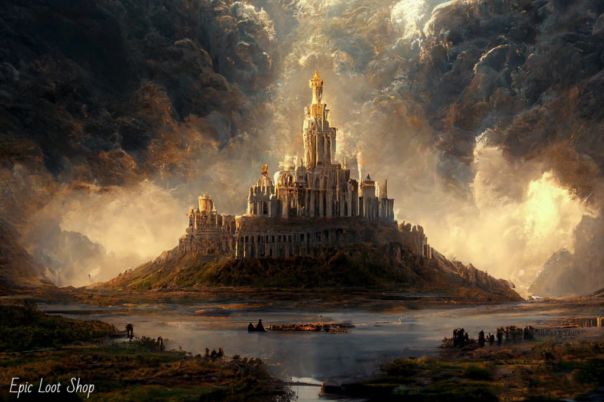
Asgard is one of the Nine Realms in Norse mythology, often depicted as the home of the Aesir gods, including Odin, Thor, and Frigg. It’s portrayed as a majestic and fortified realm located in the sky, connected to Midgard (the world of humans) by the Bifröst, a rainbow bridge.
In modern popular culture, Asgard has been popularized through comic books and movies, particularly in the Marvel Cinematic Universe. In these interpretations, it’s depicted as a technologically advanced yet mythologically rich realm with a regal and heroic flair.
One day, Thor, the thunder god, wakes up to find that his mighty hammer, Mjölnir, is missing. This hammer is not just a weapon but a symbol of Thor's power and protection for both gods and humans. Without it, Thor feels vulnerable and anxious.
Thor goes to Loki, the trickster god, for help. Loki uses his shape-shifting abilities and discovers that the giant Thrym has stolen Mjölnir. Thrym has hidden the hammer in exchange for the goddess Freyja’s hand in marriage.
Thor and Loki come up with a plan to retrieve the hammer. Thor disguises himself as Freyja, wearing her bridal dress and veil, while Loki dresses as the bride’s maid. They go to Thrym’s hall for the "wedding."
At the feast, Thrym is delighted, but he becomes suspicious when "Freyja" eats an enormous amount of food and drinks a lot of mead. Loki distracts him with excuses, saying that Freyja has been fasting and is very hungry.
When Thrym finally presents the hammer to "Freyja" to bless the marriage, Thor reveals his true identity, grabs Mjölnir, and uses it to defeat Thrym and the other giants. With the hammer back in his possession, Thor returns to Asgard, grateful for Loki’s help.
This story highlights Thor's reliance on his hammer, the cunning of Loki, and the theme of cleverness overcoming brute strength.
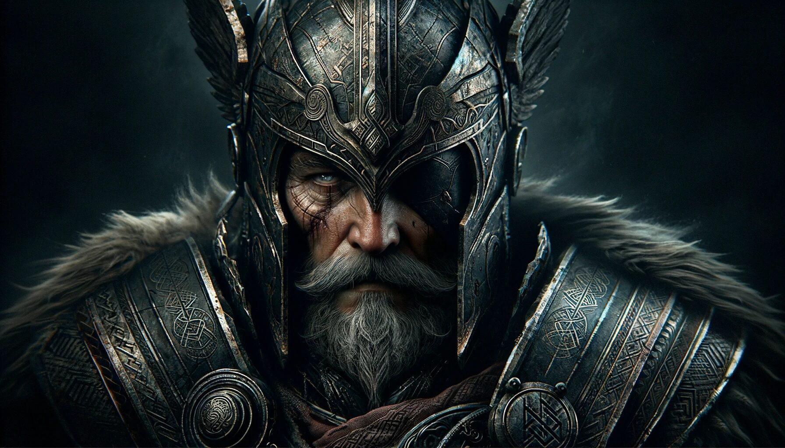
The chief of the Aesir, Odin is the god of wisdom, war, and death. He sacrifices one of his eyes for wisdom and is known for his quest for knowledge and foresight.
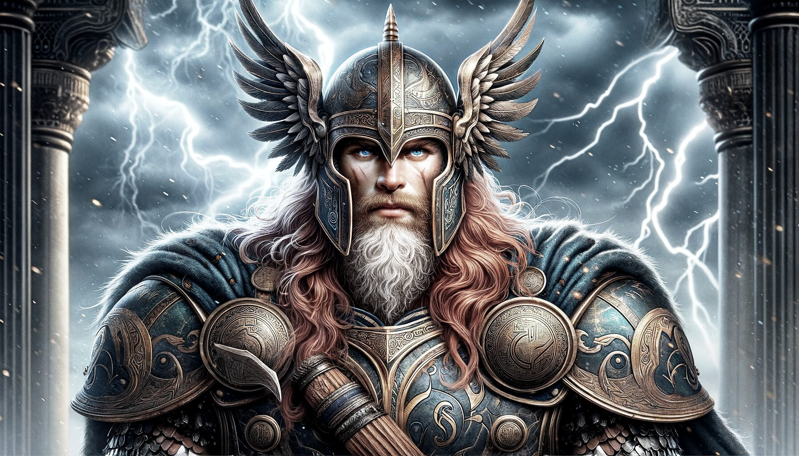
The thunder god, Thor wields the powerful hammer Mjölnir. He is known for his strength and his role as a protector of gods and humans against giants and other threats.
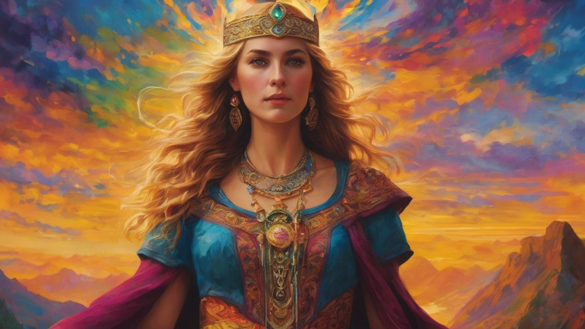
Odin’s wife and queen of the Aesir, Frigg is associated with motherhood, marriage, and prophecy. She is known for her ability to foresee the future.
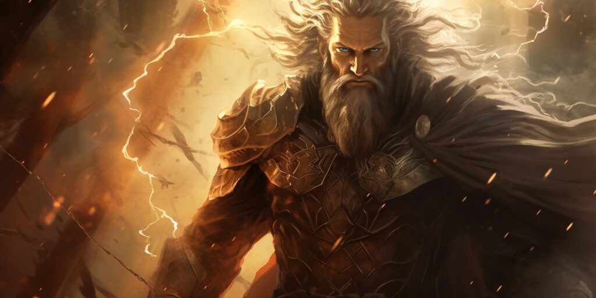
The god of light, purity, and beauty. Baldr is beloved by all, and his death is a pivotal event leading to Ragnarök.
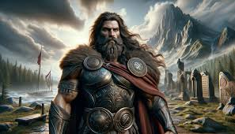
The god of war and justice, Tyr is known for his bravery and sacrifice, particularly in binding the wolf Fenrir.
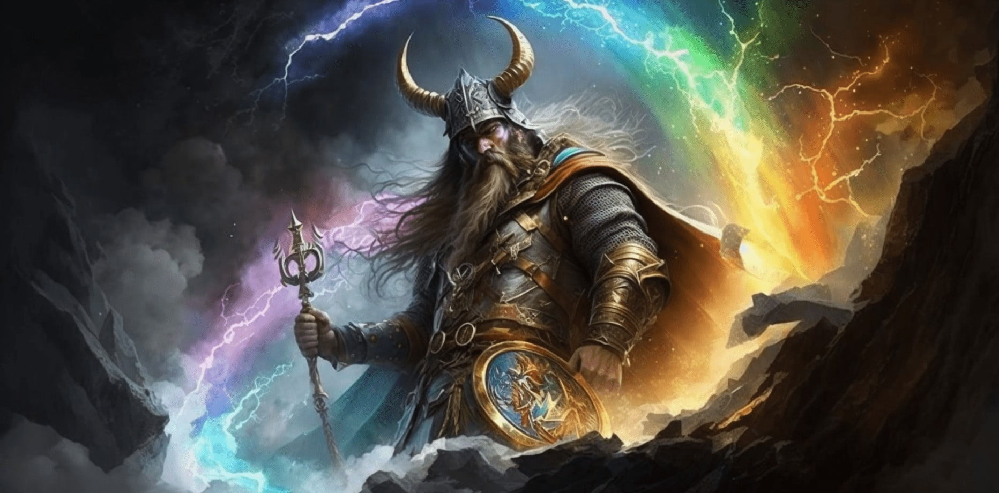
The guardian of the Bifröst bridge, Heimdall has extraordinary senses and is destined to sound the Gjallarhorn to signal the start of Ragnarök.
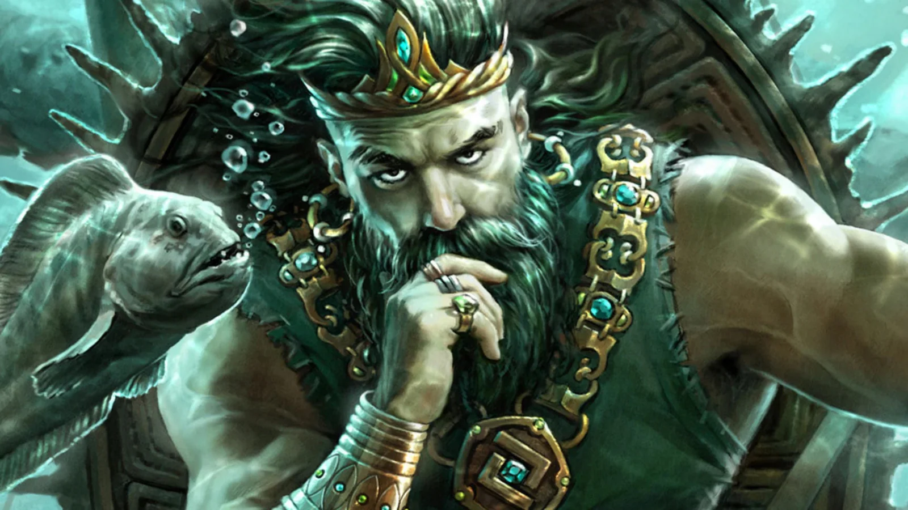
The god of the sea, winds, and wealth, Njord is associated with prosperity and maritime success. He is the father of Frey and Freyja.
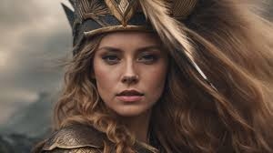
The goddess of love, fertility, and war, Freyja is known for her beauty and magical abilities. She rides a chariot drawn by cats and has a strong association with both love and battle.
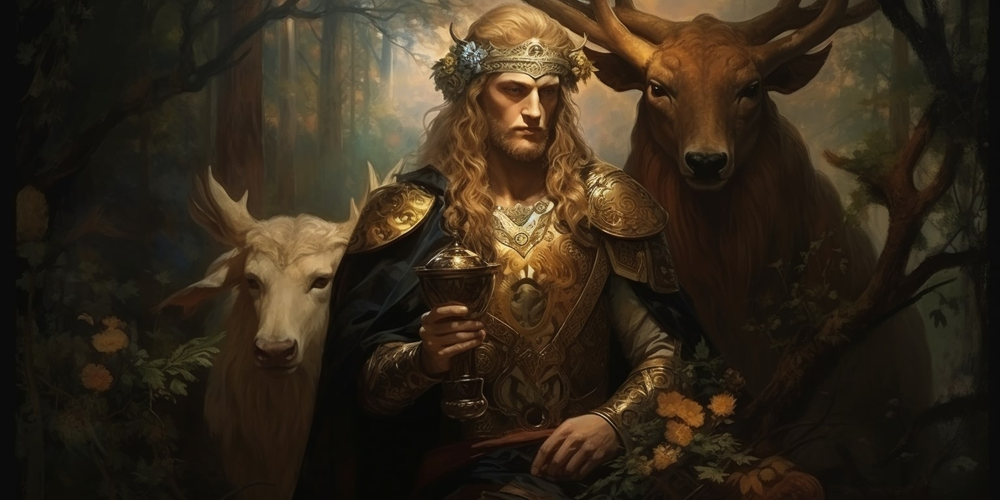
The god of fertility, prosperity, and good harvests, Frey is the brother of Freyja. He is associated with peace and abundance.
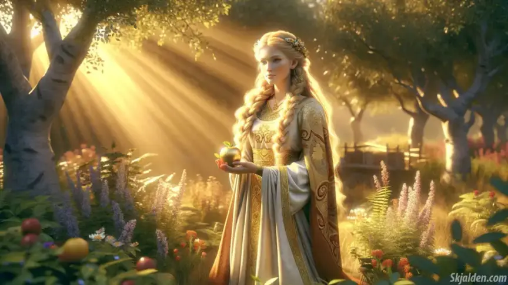
The goddess of youth and rejuvenation, Idunn guards the golden apples that ensure the gods’ immortality.
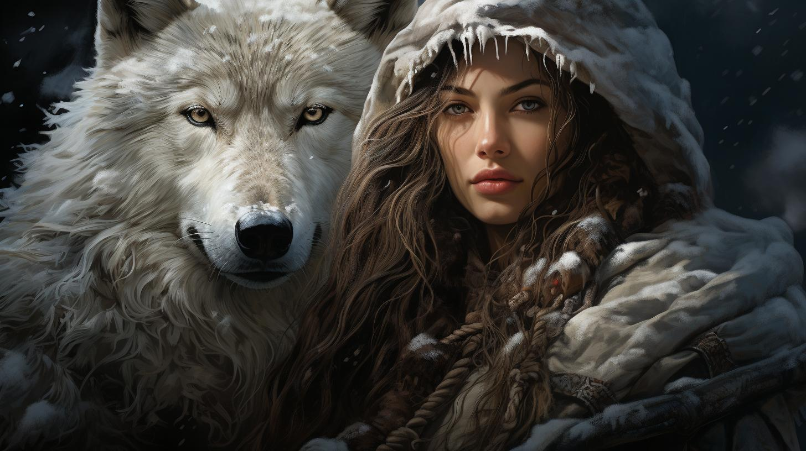
A goddess associated with winter, skiing, and hunting. Skadi is a giantess who married Njord as part of a settlement between the gods and the giants.
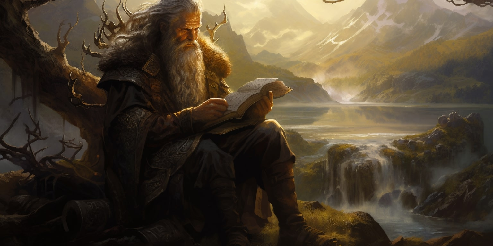
Norse mythology is a rich tapestry of ancient beliefs and legends from the North Germanic peoples, centered around a complex cosmology and a diverse pantheon of deities. It explores a universe structured around the World Tree, Yggdrasil, which connects various realms including the divine realm of Asgard, the human world of Midgard, and the chaotic realm of Jotunheim.
The mythology features prominent gods like Odin, Thor, and Freyja, each embodying different aspects of life and nature, while also incorporating otherworldly beings such as giants and elves.
Central themes include the cyclical nature of time, with narratives of creation, destruction, and rebirth, exemplified by the prophesied end times known as Ragnarök.
The mythology reflects a deep belief in fate and destiny, influencing the actions and destinies of gods and mortals alike, and continues to resonate in modern literature, art, and popular culture.